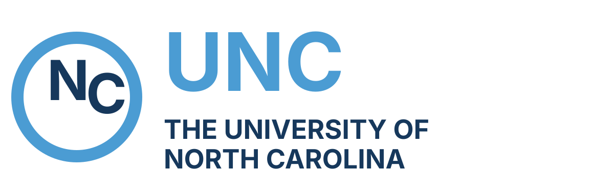

Statistical and AI Methods
for Health Data Science
Empowering Health Data Science through the Integration of Statistics and AI


Staying in the Driver's Seat: Calibrating AI Use in Statistical Research, Training, and Practice

is an Associate Professor of Biostatistics at the UNC Gillings School of Global Public Health, with a joint appointment at the UNC Lineberger Comprehensive Cancer Center. His research group develops statistical and machine learning methods for precision oncology, spanning adaptive and Bayesian trial design, deep learning, and high-dimensional inference for genomic data. The group’s translational work has produced open-source software and CLIA-certified clinical diagnostics now used in clinical practice and multi-site trials. Dr. Rashid serves on the Nature Medicine Statistical Advisory Panel and the V Foundation Scientific Advisory Board, is an Associate Editor of the Annals of Applied Statistics, and co-directs biostatistics cores for the UNC breast and pancreatic SPOREs. His group has recently developed internal policies for the deliberate use of AI coding tools in research and graduate training.
Generative AI tools have become part of daily statistical research and training. They can accelerate everyday tasks, help us work in unfamiliar coding frameworks, and reduce the friction of writing first drafts. But these gains raise a less obvious question: as we use AI for more substantive parts of our work, how do we stay actively engaged with the choices and reasoning embedded in its output? Without deliberate attention, reliance on AI output may make us less vigilant about errors, less attentive to nuance, and less disciplined about what we still need to understand ourselves.
This talk presents principles, daily habits, and project-level practices for using AI effectively while maintaining genuine ownership of our work. It draws on a working guide developed within the Rashid Lab, originally focused on AI coding assistants, and extends it to broader settings where the same dynamics arise: our own research, the doctoral students we train, and the students we teach. The argument is grounded in pre-AI cognitive science on tool use, learning, and expert intuition (Bjork & Bjork, 2011; Risko & Gilbert, 2016; Kahneman & Klein, 2009), as well as emerging peer-reviewed evidence on AI use in learning contexts (Bastani et al., PNAS 2025). Our central aim is practical: to show how researchers, trainees, and instructors can use AI in ways that support continual learning while preserving the understanding needed to judge, explain, and defend our work.
Quantitative methods for microbial communities and the human microbiome
co-directs the Harvard Chan Microbiome in Public Health Center and the associated Harvard Chan Microbiome Analysis and Collection Cores. He received his PhD from Princeton University and his MS from Carnegie Mellon. He participated extensively in the NIH Human Microbiome Project, led the Microbiome Quality Control Project and the Human Microbiome Bioactives Resource, and currently co-leads the Human Virome Program Coordinating Center.
Statistical methods for microbial community research have evolved to address most of the tasks necessary for end-to-end environmental or human population study design and execution. These include power calculations, data handling and denoising, simulations and evaluation, and biostatistics for phenotypic and covariate analysis. All must take into account the now well-established properties of typical microbial ecology data, including compositionality, sparsity, and nonindependence. I will review the state of the art and discuss solutions for linear modeling, mediation analysis, and omnibus testing. The second bridges feature-wise association testing with interaction analyses, correcting false discovery rates and demonstrating substantial lack of agreement among mediation approaches. The third investigates the widespread use of PERMANOVA and similar methods, suggesting corrections that again better control false discovery rates and quantify biologically interpretable effect sizes. Together, these provide a flexible toolkit enabling most commonly needed quantitative analyses for microbial community science.

Deconstructing Alzheimer’s Disease and Related Dementias to Enable Precision Medicine: Challenges, Models, and Resources for Data Science

, Psy.D., is the Raymond C. Beeler Professor of Radiology and Imaging Sciences and Professor of Medical and Molecular Genetics at the Indiana University School of Medicine. Dr. Saykin serves as director of the Indiana Alzheimer's Disease Research Center (IADRC) and IU Center for Neuroimaging. He leads the ADNI Genetics Core and is an MPI of several NIA-sponsored consortia (CLEAR-AD, KBASE, AI4AD) with experience in collaborative, transdisciplinary, and multi-institutional team science. His current research program focuses on systems biology approaches to understanding pathways driving AD/ADRD, leveraging multimodal neuroimaging, multi-omics biomarkers, and AI-based strategies. Dr. Saykin is the founding editor-in-chief of *Brain Imaging and Behavior*, and a highly cited author with over 700 publications.
Alzheimer’s disease (AD) and related dementia (ADRD) research has become increasingly big data-driven, relying on large, heterogeneous, and longitudinal datasets that span imaging, biomarkers, genetics, and clinical phenotyping. Experimental data from model systems and clinical trials now often include rich high dimensional data along with key outcomes. Although researchers have known about plaques and tangles, composed of amyloid beta and tau proteins for over a century, the underlying causes of most forms of AD/ADRD remain unknown. This lecture will discuss foundational questions and challenges in ADRD research including how data sciences/AI can help advance precision diagnostic and therapeutic strategies for ADRD and will introduce the growing ensemble of accessible data resources available for analysis in an open science framework. Major NIA-funded observational data resources such as the National Alzheimer’s Coordinating Center (NACC) and Alzheimer’s Disease Neuroimaging Initiative (ADNI) and affiliated neuroimaging, genetics, and multi-omics data repositories will be described, along with efforts at data harmonization. Future directions include increasing use of large-scale electronic health records and national databases providing a window to diagnoses, treatment and outcomes in real-world clinical healthcare settings. Finally, bottlenecks in advancing knowledge of causal mechanisms, early detection, and development of novel therapeutic strategies will be discussed.
Generative AI and Statistics
Bridging the Gap Between Generative AI and Statistical Methodologies
AI agents to accelerate scientific discoveries

is an Associate Professor of Biomedical Data Science and, by courtesy, Computer Science and Electrical Engineering at Stanford University. His research focuses on making AI more reliable and human-compatible, with particular interest in applications for human disease and health. He is a two-time Chan-Zuckerberg Investigator (2017, 2023), Faculty Director at the Stanford Data Science Institute, and a member of the Stanford AI Lab. He received the Overton Prize, NSF CAREER Award, and Sloan Fellowship, along with multiple best paper awards and faculty awards from Google, Amazon, Genentech, and Apple.
AI agents--large language models equipped with tools and reasoning capabilities--are emerging as powerful research enablers. This talk will explore how agentic AI can accelerate scientific discoveries. I’ll first introduce the Virtual Lab--a collaborative team of AI scientist agents conducting in silico research meetings to tackle open-ended research projects. As an example application, the Virtual Lab designed new nanobody binders to recent Covid variants that we experimentally validated. Then I will introduce Paper2Agent, a framework to automatically convert passive research papers into interactive AI agents. Finally I will discuss learnings from Agents4Science, the first conference where the authors and reviewers are primarily AI systems.

Leveraging LLMs for student feedback in introductory data science courses

is a Professor of the Practice and Director of Undergraduate Studies in the Department of Statistical Science at Duke University, and Director of the First-Year Experience in Trinity College of Arts & Sciences. Her work focuses on innovation in statistics and data science pedagogy, with an emphasis on computing, reproducible research, student-centered learning, and open-source education. She is a contributor to the OpenIntro Statistics textbook and develops R packages and resources for data science education.
A considerable recent challenge for learners and teachers of data science courses is the increasing use of LLM-based tools in generating answers. In this talk, I will introduce an R package that leverages LLMs to produce immediate feedback on student work to motivate them to give it a try themselves first. I will discuss the technical details of augmenting models with course materials, as well as backend and user interface decisions, challenges surrounding evaluations that are not performed correctly by the LLM, and student feedback from the first set of users. Finally, I will discuss incorporating this tool into low-stakes assessments and address ethical considerations for the formal assessment structure of the course, which relies on LLMs.